Instructions to extract and configure Fortress Builder Package to Target System
- Copy fortressBuilder-[platform]-[version].zip to hard drive on target server env.
- Extract the zip. The location for archive can vary according to requirements. The location of package will be referred to as FORTRESS_HOME later on.
- Enable permission for the binaries to execute. From FORTRESS_HOME root folder, enter the following command from a system prompt:
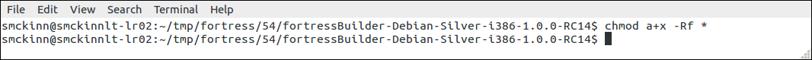chmod a+x -Rf *
- if debian platform and using sudo, edit file named 'build.properties' and insert sudo password here:
note: For Redhat deployments leave this param's value empty, like below, otherwise the 'stop-slapd' target may not work.sudo.pw=your pw here
sudo.pw=
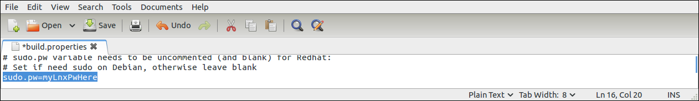
Instructions to run the Fortress Ant Build
-
From FORTRESS_HOME root folder, edit the b.sh script to point to java home:
export JAVA_HOME=/opt/jdk1.7.0_10
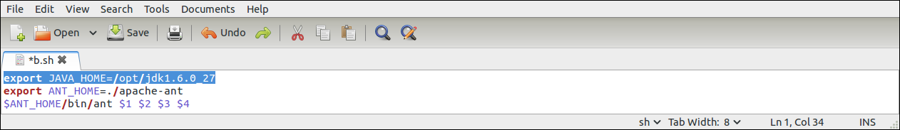 -
Run the distribution target:
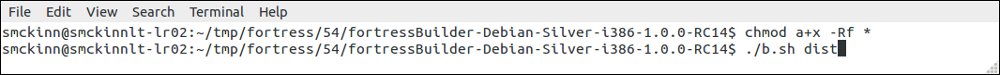./b.sh dist
Note: The b.sh batch file referred to here uses Ant package that is local to Fortress quickstart package. -
Verify it ran correctly according to Ant:
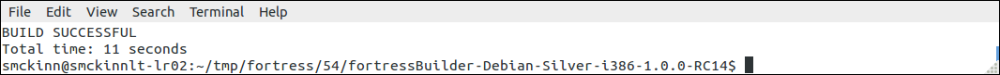BUILD SUCCESSFUL
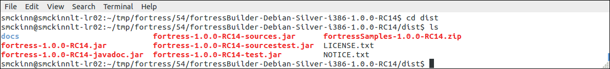
Instructions to run the Builder to Install Symas OpenLDAP, configure and load with seed data
Important: This target reinstalls and reloads the OpenLDAP server program, configuration and data.
-
The fortress 'init-slapd' uses LDAPv3 to perform initial operations.
edit build.properties, ensure the following line has been commented out:
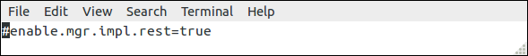
Note: The default for this setting is 'false' or disabled.
-
From FORTRESS_HOME root folder, enter the following command from a system prompt:
if sudo:
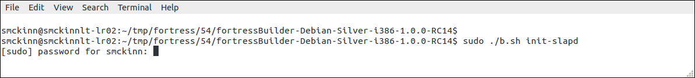sudo ./b.sh init-slapd
if not sudo you must run as user that has priv to modify folders in /var and /opt folders:
[enter your pw]su
before running the command to kick off the install./b.sh init-slapd
-
Verify it ran correctly according to Ant.
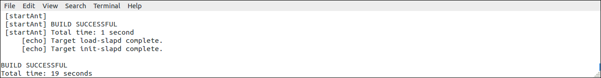BUILD SUCCESSFUL
-
After above step completes, Symas OpenLDAP will be installed, configured and loaded with fortress bootstrap config. This
step also runs provisioning scripts which may be tailored according to requirements. Check out the xml load scripts
in FORTRESS_HOME/ldap/setup folder.
-
Point your preferred LDAP browser, ours is Apache Directory Studio, to the installed directory.
The configuration parameters you'll need to browse can be found in the generated 'slapd.conf' file.
To view data stored in default database:
The root pw will be encrypted before stored in slapd.confsuffix "dc=openldap,dc=org" rootdn "cn=Manager,dc=openldap,dc=org" rootpw "secret"
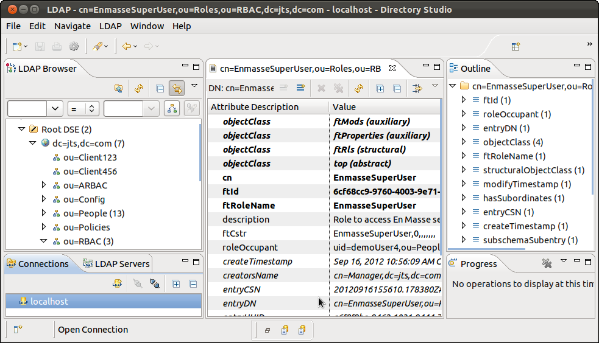
To view data stored in audit log database:
The log root pw will be encrypted before stored in slapd.confsuffix "cn=log" rootdn "cn=Manager,cn=log" rootpw "secret"
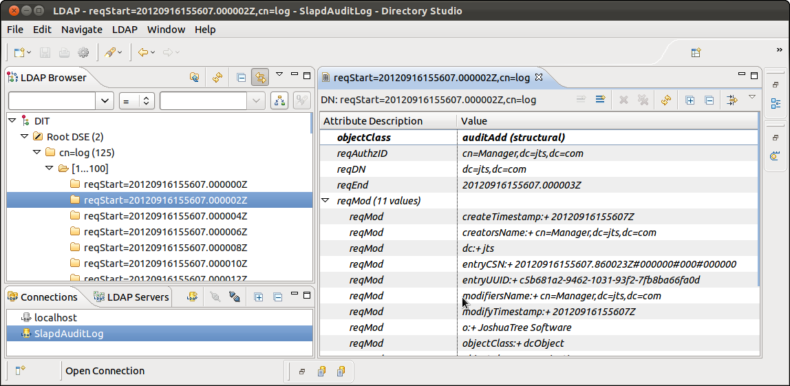
Instructions to regression test Fortress and Symas OpenLDAP on target machine (optional)
- From FORTRESS_HOME root folder, enter the following command from a system prompt:
./b.sh test-full
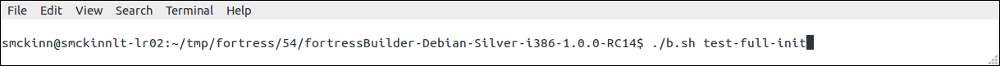 - Verify these tests ran with no ERRORS.
BUILD SUCCESSFUL
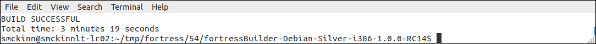 -
To re-run these tests:
./b.sh test-full
Note: The Fortress regression tests will run for around 3 minutes.
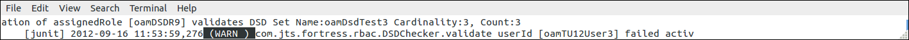
Note 2: If you made it this far without junit or ant ERRORS, the Fortress and Symas OpenLDAP IAM system are certified to run on your machine.
Note 3: These tests load tens of thousands of records into your newly installed directory. The 'init-slapd' and 'test-full' targets may be re-run as often as necessary. After regressions testing has completed, you may run the 'init-slapd' target to remove all test data from the directory.
Instructions to install Commander Web UI Demo (optional)
Run the install-commander-demo target:./b.sh install-commander-demo
Instructions to automatically test Commander Web UI Demo (optional)
Run the commander-maven-test target to perform headless test of Commander Web:note: Firefox must be preinstalled to target system../b.sh commander-maven-test
Instructions to connect to Commander Web Admin
Open up browser and enter the following URL:userId: test password: testhttp://localhost:8080/commander
Click on links on top or bottons on side of page to navigate between pages
Instructions to run the Fortress Command Line Interpreter (CLI) utility (optional)
This command line tool provides an interactive session with the user based on a simple command line syntax.-
To start the CLI, enter:
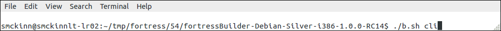./b.sh cli
Which will bring up the command interpreter:
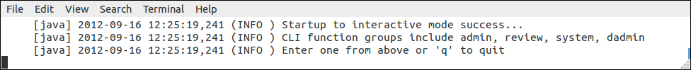
-
enter the command:
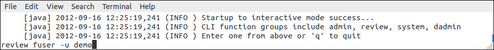review fuser -u demo
This example will return all users with userId that begins with 'demo':
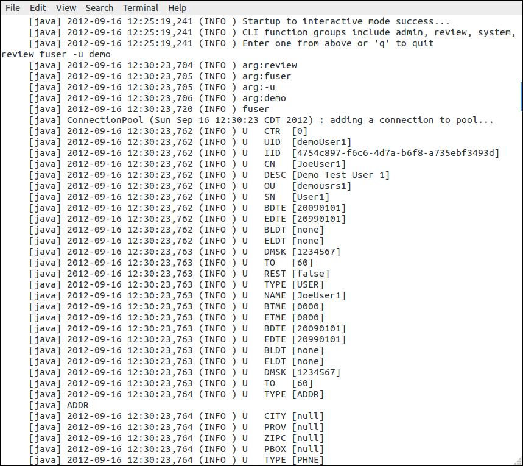
-
To learn more about the CLI and what it can do, follow instructions in the command line interpreter reference
manual in the javadoc located here:
Command Line Interpreter
Note: if javadocs are not found, go to Section X
Instructions to run Fortress Console (optional)
For tasks like one-time setup of new users, password resets, searches the Fortress Console application can be used.-
From FORTRESS_HOME root folder, enter the following command
from a system prompt:
./b.sh console

-
Console Screenshots...
-
Main Menu:
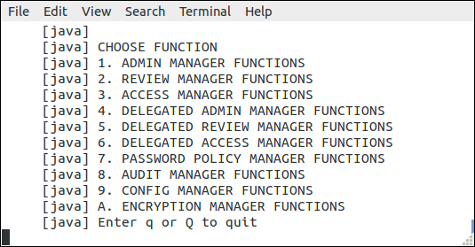
-
Enter choice and follow the screen prompts to edit RBAC data:
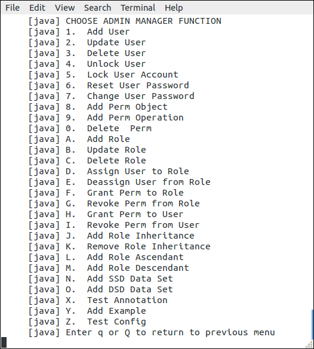
-
Enter choice and follow the screen prompts to search RBAC data:
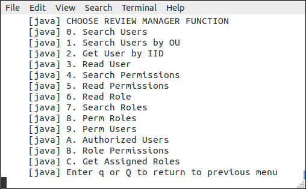
-
Enter choice and follow the screen prompts to test RBAC policies:
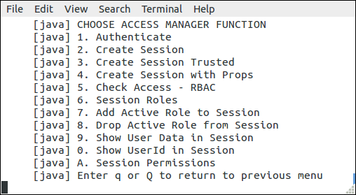
-
Enter choice and follow the screen prompts to setup ARBAC delegated policies:
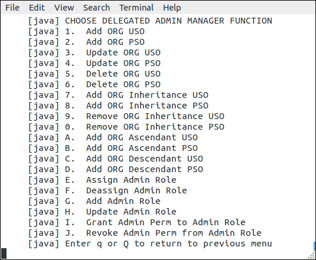
-
Enter choice and follow the screen prompts to search through the AUDIT log:
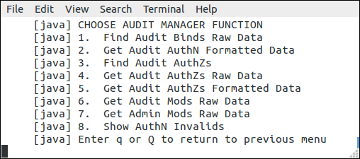
-
Main Menu:
Instructions to generate and view Javadoc (optional)
-
Run the javadoc target:
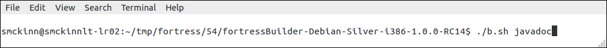./b.sh javadoc
- Navigate to where docs are genned:
- Open 'index.html' using your preferred HTML Browser: 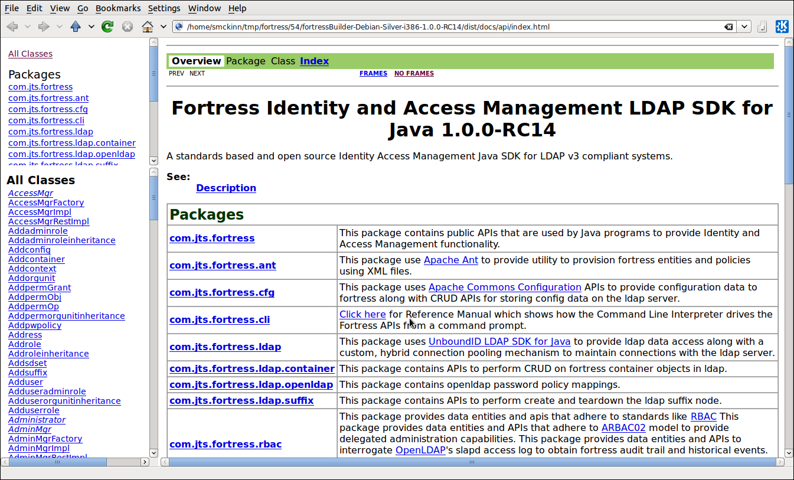
- The javadoc provides coverage of the Fortress APIs and also provides explanations on how RBAC, ARBAC, PW Policies and Audit work.
- Good places to start learning about Fortress:
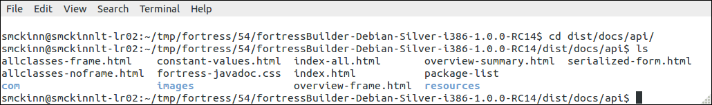
Instructions to install EnMasse Policy Server Demo (optional)
-
Run the install-enmasse-demo target:
./b.sh install-enmasse-demo
-
Verify it ran correctly according to Ant.
BUILD SUCCESSFUL

-
After above step completes, Fortress EnMasse will be installed
Instructions to regression test EnMasse Policy server on target machine (optional)
- Edit file named 'build.properties' and enable REST protocol here:
Accept the defaults for other HTTP parameters in build.properties:enable.mgr.impl.rest=true
http.user=demouser4 http.pw=gX9JbCTxJW5RiH+otQEX0Ja0RIAoPBQf http.host=localhost http.port=8080
Should look like the following:
- Save and exit the text file editor
- From FORTRESS_HOME root folder, enter the following command from a system prompt:
./b.sh test-full
- Verify these tests ran with no ERRORS.
BUILD SUCCESSFUL
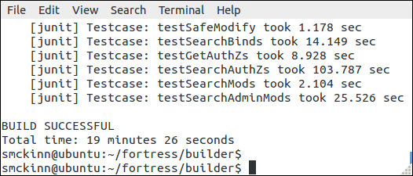 -
This regression test may be rerun as often as necessary:
./b.sh test-full
Note 1: WARNING messages in test output are good as these are negative tests in action:

Note: The EnMasse regression tests will run for around 20 minutes.
Note 2: If you made it this far without junit or ant ERRORS, EnMasse is installed and certified to run on your machine.
Note 3: These tests load tens of thousands of records into your directory. The 'test-full' target may be re-run as often as necessary. After regressions testing have completed, you may run the 'init-slapd' target to remove all test data from the directory.